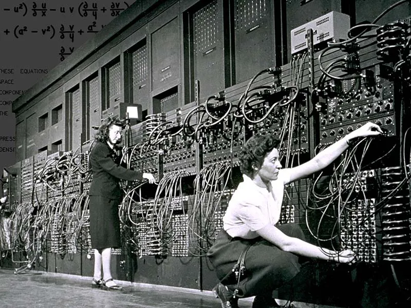

Primeira Geração (1940-1952)
A primeira geração dos sistemas operacionais foi marcada por algumas
características importantes que
estabeleceram os fundamentos para os sistemas operacionais modernos,=
- Uso de válvulas eletrônicas
Os computadores da primeira geração, como
o ENIAC e o UNIVAC I, que utilizavam válvulas eletrônicas para processamento de dados.
Essas válvulas eram grandes, geravam muito calor e tinham uma vida útil limitada,
o que deixava os sistemas operacionais dessa época menos confiáveis em comparação aos sistemas atuais.
O ENIAC possuía 17.468 tubos de vácuo, 6.000 interruptores, 10.000 condensadores,
1.500 relés, 70.000 resistências, realizava 4.500 cálculos por segundo,pesando 30 toneladas com um tamanho
surpreendente que ocupava um galpão imenso consumindo 200.000 watts,gerando muito calor. Comparado ao processamento dos computadores atuais, o processamento do ENIAC é notoriamente inferior, sendo suficiente ,apenas, para processar 5.000 adições, 357 multiplicações e 38 divisões por segundo, bem menos até do que uma simples calculadora de bolso atual.
O UNIVAC I foi o primeiro computador comercial, desenvolvido por J. Presper Eckert e John Mauchly em 1951. Esse
sistema operacional era primitivo e fornecia suporte básico para tarefas como carregamento de programas e
gerenciamento de entrada e saída. Além disso, o computador pesava 13 toneladas, consumia 125 kW e ocupava mais
de 35 m² de espaço.O UNICAC I foi usado principalmente para aplicações comerciais e militares e marcou, junto
com o ENIAC, o início da computação moderna.
- Programação manual. Programas eram escritos manualmente em linguagem de máquina e inseridos nos computadores por meio de cartões perfurados. Isso exigia uma compreensão profunda da arquitetura do computador e tornava o processo de programação bastante lento e predisposto a erros.
- Foco em aplicações específicas.
Os primeiros sistemas operacionais foram desenvolvidos para atender a funções específicas,
como cálculos científicos ou processamento de dados comerciais. Eles não eram tão flexíveis
quanto os sistemas dos dias atuais, visto que os computadores da atualidade são projetados para suportar
várias funções.
- Gerenciamento básico de recursos. Os sistemas operacionais da primeira geração forneciam suporte básico para funções como carregamento de programas na memória, gerenciamento de entrada e saída de dados e controle de execução de programas.